A ignorancia protege. A clareza consome. Mas só quem vê a sombra pode entender a luz
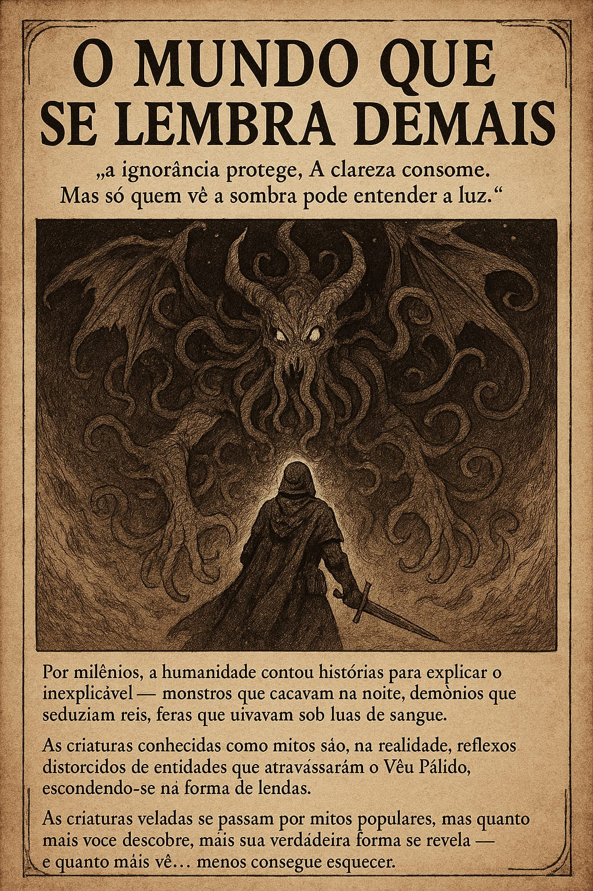
Por milênios, a humanidade contou histórias para explicar o inexplicável — monstros que caçavam na noite,
demônios que seduziam reis, feras que uivavam sob luas de sangue.
Mas essas histórias são apenas versões infantis de uma verdade muito mais aterradora.
As criaturas conhecidas como mitos são, na realidade, reflexos distorcidos de entidades que atravessaram o Véu
Pálido, escondendo-se na forma de lendas.
As criaturas veladas se passam por mitos populares, mas quanto mais você descobre, mais sua verdadeira forma se
revela — e quanto mais vê... menos consegue esquecer.
OS QUE ENXERGAM DEMAIS
O mundo finge que está inteiro. Os Caçadores lembram que ele está apenas costurado.
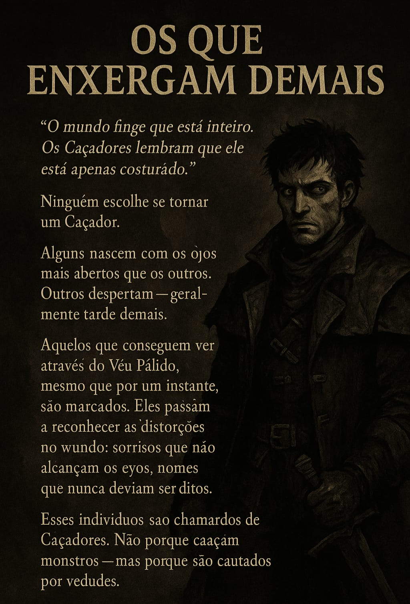
Ninguém escolhe se tornar um Caçador.
Alguns nascem com os olhos mais abertos que os outros. Outros despertam — geralmente tarde demais.
Aqueles que conseguem ver através do Véu Pálido, mesmo que por um instante, são marcados. Eles passam a reconhecer
as distorções no mundo: sorrisos que não alcançam os olhos, sombras com vontade própria, nomes que nunca deviam
ser ditos.
Esses indivíduos são chamados de Caçadores. Não porque caçam monstros — mas porque são caçados por verdades.
CLAREZA — A VERDADE QUE ARDE
Clareza não pode ser esquecida.
Apenas acumulada
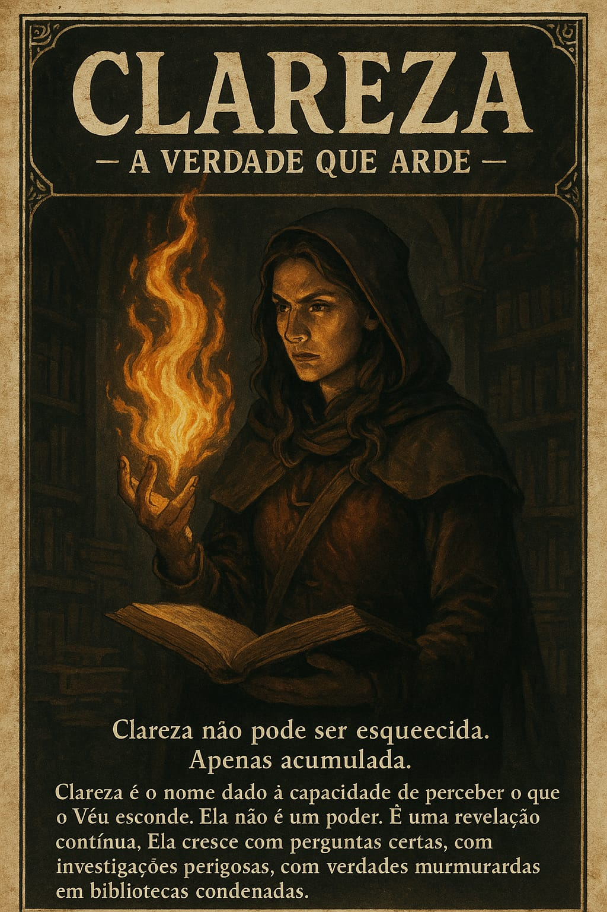
Clareza é o nome dado à capacidade de perceber o que o Véu esconde.
Ela não é um poder. É uma revelação contínua.
Ela cresce com perguntas certas, com investigações perigosas, com verdades murmuradas em bibliotecas condenadas.
ESCOLHA SEU CAMINHO
ArtemisHP: 15
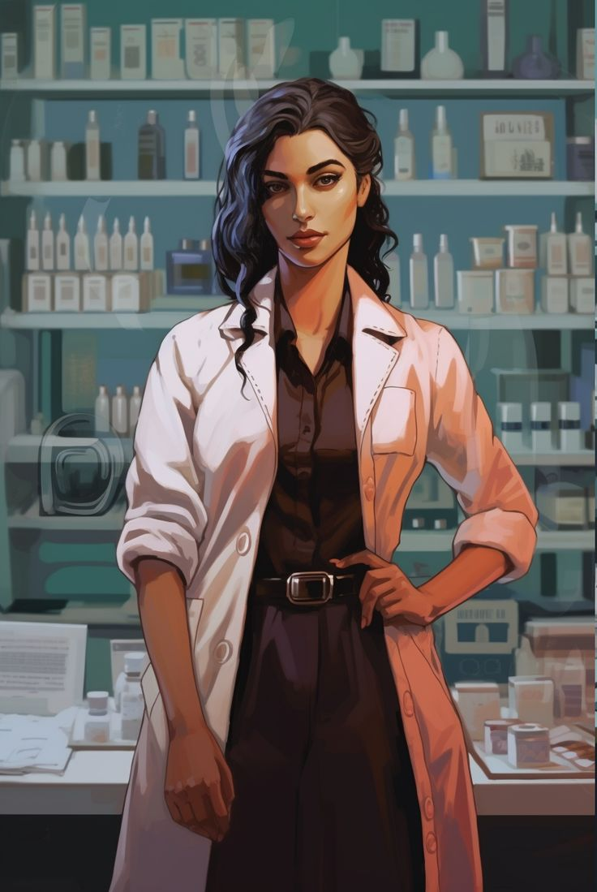
Médica de Emergência
Uma médica, que viu pacientes morrerem de "causas impossíveis". Esta decidida a entender, algo que não
deveria.
RonanHP: 20
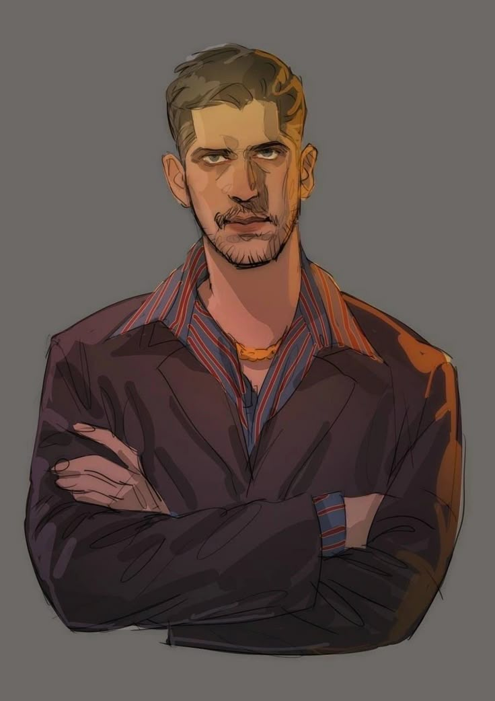
Ex-Criminoso
Um contrabandista ilegal, envolvido em um crime "errado" que lhe revelou um lado oculto do mundo.
CainHP: 20
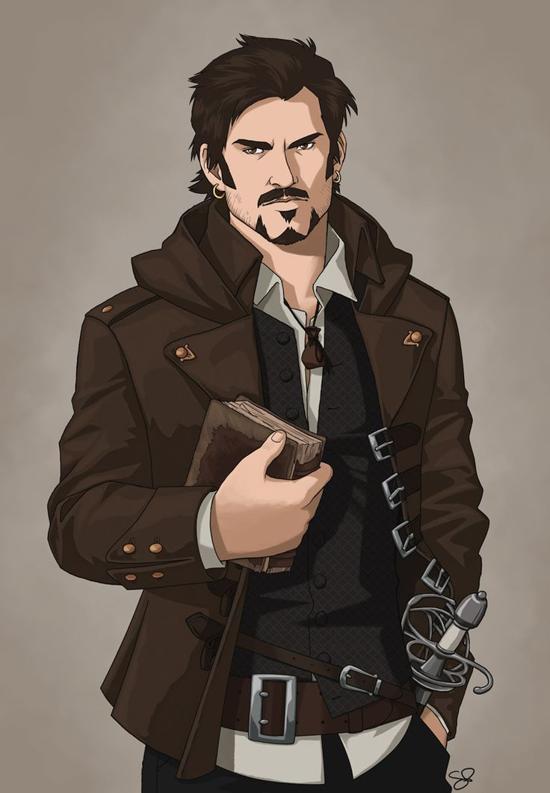
Historiador/Bibliotecario
Um estudioso, pesquisador, historiador e bibliotecario com acesso a registros antigos, muitos dos quais
deveriam ter sido destruídos.
ThorneHP: 20
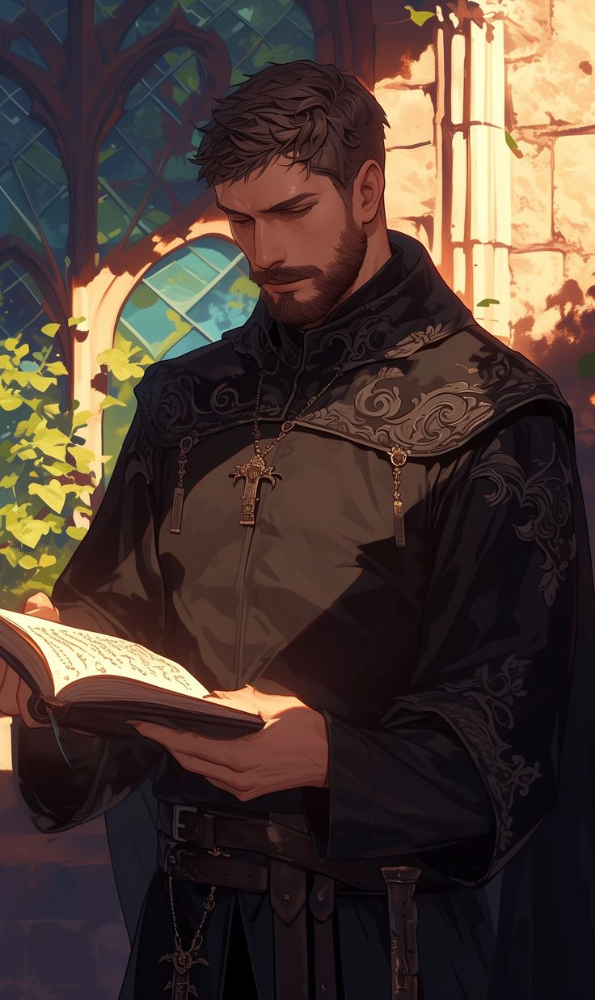
Clérigo Silenciado
Um padre que passou por uma crise espiritual após uma visão proibida. Busca sentido na verdade velada.
RobertHP: 25
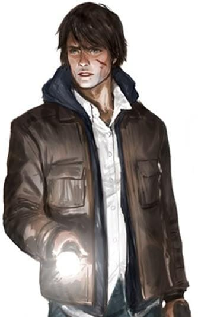
Detetive Civil
Um investigador particular, que se meteu em casos grandes demais para seu próprio bem.
DianaHP: 20
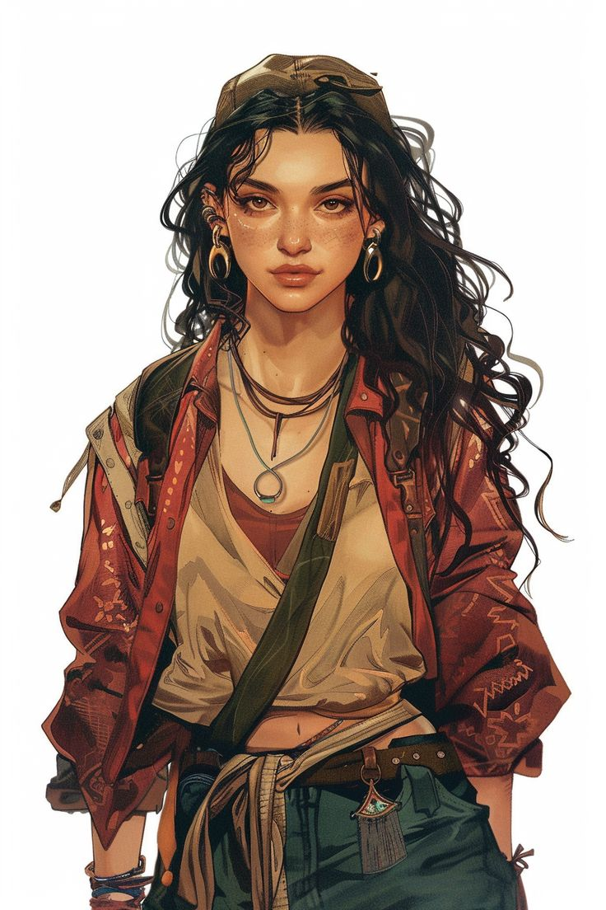
Jornalista de Campo
Repórter investigativa, documentarista e radialista. Vai onde ninguém quer ir e faz perguntas que não deveriam
ser feitas.
LyraHP: 15
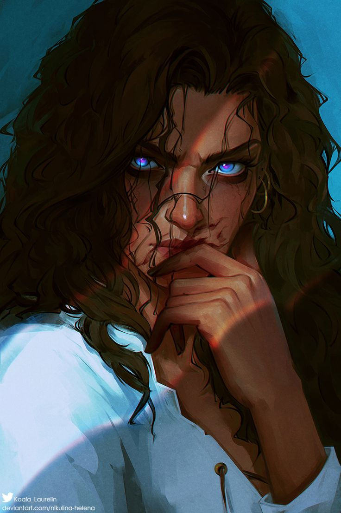
Operadora Paranormal
Uma "profissional do estranho"- caçadora de fantasmas, técnica em fenômenos inexplicáveis, e uma charlatona
que descobriu que tudo era real.
KaelHP: 15
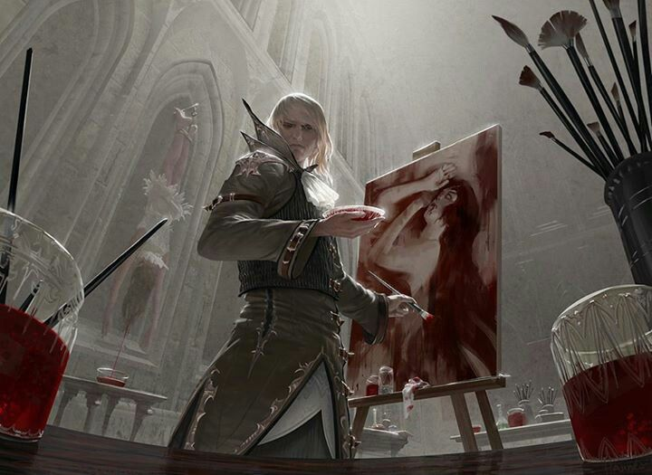
Pintor Obcecado
Um pintor, cujas obras começaram a retratar imagens que ele nunca viu... ou que ainda não aconteceram.
MiraHP: 30
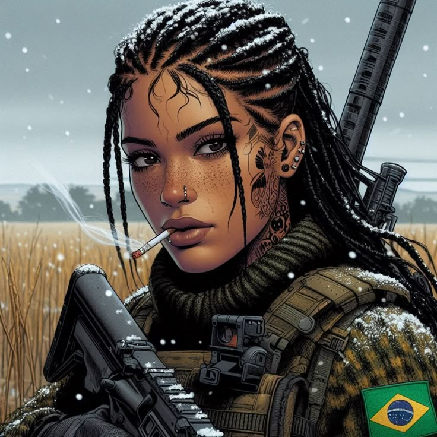
Veterana de Guerra
Uma sobrevivente de conflitos esquecidos. Trouxe cicatrizes... e algo mais, algo que veio com ela.
Ficha Técnica
Artemis
Profissão: Médica de Emergência
Clareza Inicial: 12
Vida (HP): 15
Atributos
Vontade: 4
Percepção: 3
Instinto: 2
Conhecimento: 3
Convicção: 6
Ofício: 2
Habilidades
Estabilização Rápida: Pode impedir uma morte por um turno.
Anatomia Oculta: Consegue identificar quando um corpo não é humano.
Itens Iniciais
Seringa Automática de Sangue Preto: Estabiliza ferimentos, mas causa sonhos vívidos.
Estetoscópio Mudo: Só emite som quando algo "vive" onde não deveria.
Vivência Paranormal
Médica que viu corpos “mortos” moverem-se no hospital
Ficha Técnica
Ronan
Profissão:Ex-Criminoso
Clareza Inicial: 0
Vida (HP): 20
Atributos
Vontade: 2
Percepção: 4
Instinto: 5
Conhecimento: 1
Convicção: 3
Ofício: 5
Habilidades
Faro de Encrenca: Sempre sente quando há algo errado, mesmo que não saiba o quê.
Rota de Fuga: Consegue escapar de áreas fechadas de forma criativa.
Itens Iniciais
Moeda Antiga Marcada: Sempre cai do lado "errado", mas indica perigo iminente.
Chave de Lugar Nenhum: Pode abrir portas que não deveriam existir.
Vivência Paranormal
Contrabandista que roubou algo que não devia, ou que não existia. Viu seu reflexo fugir antes de si
no meio do roubo.
Ficha Técnica
Cain
Profissão:Historiador
Clareza Inicial: 15
Vida (HP): 25
Atributos
Vontade: 2
Percepção: 4
Instinto: 1
Conhecimento: 6
Convicção: 3
Ofício: 4
Habilidades
Enciclopédia Andante: Pode delarar um conhecimento relevante sobre qualquer local ou nome
citado.
Fragmento Recorrente: Sempre reconhece um símbolo ou palavra que já viu - mesmo fora de
contexto.
Itens Iniciais
Lente de Leitura Fragmentada: Revela marcas ocultas, mas cega um dos olhos por 1 minuto.
Livro com Capas Invertidas: Quando lido pode mostrar registros esquecidos.
Vivência Paranormal
Erudito em busca de padrões esquecidos ou nunca conhecidos
Ficha Técnica
Thorne
Profissão: Clérigo Silenciado
Clareza Inicial: 20
Vida (HP): 20
Atributos
Vontade: 4
Percepção: 3
Instinto: 2
Conhecimento: 3
Convicção: 6
Ofício: 2
Habilidades
Rezar por Reflexos: Pode intuir a natureza espiritual ou profana de um local.
Ícone Desgastado: Possui um símbolo de fé que repele manifestações menores.
Itens Iniciais
Relicário Vazio: Emite um calor antinatural quando perto de um ser amaldiçoado.
Página Rasgada da Escritura Velada: Palavras nela mudam de acordo com o ambiente.
Vivência Paranormal
Padre em crise de fé após um milagre torto
Ficha Técnica
Robert
Profissão: Detetive Civil
Clareza Inicial: 10
Vida (HP): 25
Atributos
Vontade: 3
Percepção: 5
Instinto: 3
Conhecimento: 4
Convicção: 3
Ofício: 2
Habilidades
Olhar de Treinamento: Pode identificar inconsistências em uma cena ou depoimento.
Contato nas Sombras: Possui uma rede informal de informantes (rua, imprensa, polícia).
Itens Iniciais
Lanterna de Foco Quebrado: Ilumina rastros e pegadas que não são visíveis a olho nu.
Caderneta Desgastada: Páginas que não lembrava de ter escrito aparecem
com pistas vagas.
Vivência Paranormal
Presenciou um crime que não podia ser explicado; desde então, coisas desaparecem ao seu redor.
Ficha Técnica
Diana
Profissão: Jornalista de Campo
Clareza Inicial: 10
Vida (HP): 20
Atributos
Vontade: 3
Percepção: 5
Instinto: 3
Conhecimento: 3
Convicção: 4
Ofício: 2
Habilidades
Nariz para História: Sempre encontra o elemento estranho, o detalhe oculto ou a
conexão esquecida em uma narrativa.
Contato nas Sombras: Possui uma rede informal de informantes (rua, imprensa,
polícia).
Itens Iniciais
Lanterna de Foco Quebrado: Ilumina rastros e pegadas que não são visíveis a olho nu.
Fonte Persistente:Possui uma rede variada de contatos em órgãos oficiais, mídia e
comunidades marginais.
Vivência Paranormal
Publicou um artigo e não lembra ter escrito ou procurado
Ficha Técnica
Lyra
Profissão:Operadora Paranormal
Clareza Inicial: 17
Vida (HP): 15
Atributos
Vontade: 3
Percepção: 4
Instinto: 3
Conhecimento: 4
Convicção: 2
Ofício: 4
Habilidades
Equipamento Improvisado: Possui um kit que registra ou reage à presença do Véu (ex:
detector EMF, câmeras, cristais).
Contato com o Invisível: Possui uma rede informal de informantes (rua, imprensa,
polícia). Pode fazer perguntas a uma presença invisível e receber respostas ambíguas.
Itens Iniciais
Sensor EMF Caseiro: Vibra em vez de apitar; vibração aumenta com proximidade ao
oculto.
Espelho de Mão Manchado: Reflete entidades que não estão no mundo físico.
Vivência Paranormal
Falou com algo que não tinha boca. E foi respondido com palavras inescutáveis.
Ficha Técnica
Kael
Profissão:Pintor Obcecado
Clareza Inicial:25
Vida (HP):15
Atributos
Vontade: 3
Percepção: 5
Instinto: 1
Conhecimento: 4
Convicção: 5
Ofício: 2
Habilidades
Inspiração Perigosa: Suas criações revelam pistas, mas também atraem atenção de
entidades.
Transe Criativo: Pode entrar em estado alterado e ter um pressentimento real.
Itens Iniciais
Caderno de Esboços Viventes: Os desenhos piscam ou mudam ligeiramente com o tempo.
Tinta de Ossos Queimados: Toda arte feita com ela provoca desconforto a quem vê.
Vivência Paranormal
Falou com algo que não tinha boca. E foi respondido com palavras inescutáveis.
Ficha Técnica
Mira
Profissão:Veterana de Guerra
Clareza Inicial:5
Vida (HP):30
Atributos
Vontade: 4
Percepção: 3
Instinto: 5
Conhecimento: 2
Convicção: 3
Ofício: 3
Habilidades
Intuição de Combate: Em situações de perigo, age antes da maioria e percebe
emboscadas ou armadilhas.
Fogo Controlado: Pode realizar um ataque preciso com armas convencionais ou
improvisadas contra entidades visíveis.
Itens Iniciais
Medalha Trincada: Aquece perto de armadilhas ou emboscadas.
Revólver calibre .38: Possui seis balas em seu cartucho.
Vivência Paranormal
A guerra acabou, mas seus fantasmas continuam vivos em suas visões.
O jogo começa com cada personagem recebendo, de maneiras distintas, o mesmo bilhete anônimo:
Bilhete Misterioso
Não é coincidência vocês verem o que veem. Subam até o 7° andar da antiga Clínica Rayev.
A Verdade Escorre Pelos Azuleijos
Local:Distrito Dorsal, Zona Central da Cidade de Nihvaria